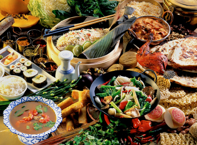

Thai cooking places emphasis on lightly prepared dishes with strong aromatic components. The spiciness of Thai cuisine is well known. As with other Asian cuisines, balance, detail and variety are of great significance to Thai chefs. Thai food is known for its balance of three to four fundamental taste senses in each dish or the overall meal: sour, sweet, salty, and bitter.